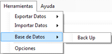

|
Backup - Resguardo de datos
|
Anterior Inicio Siguiente |
1. En la pantalla principal debemos seleccionarsobre la
barra de herramientas.
2. En la nueva pantalla, se debe seleccionar
3. Una ventana de informe de visualizará cuando finalice el proceso de BackUp.